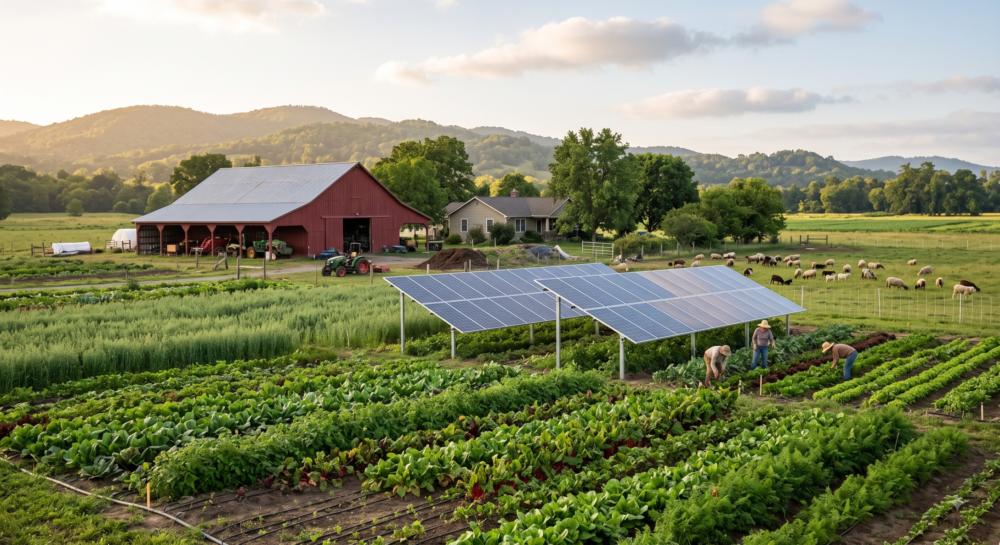
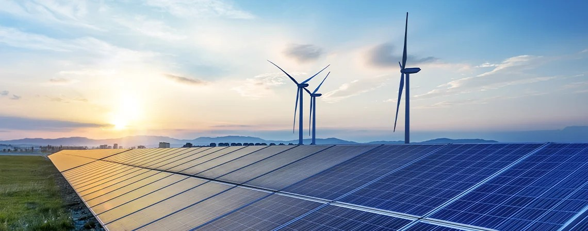
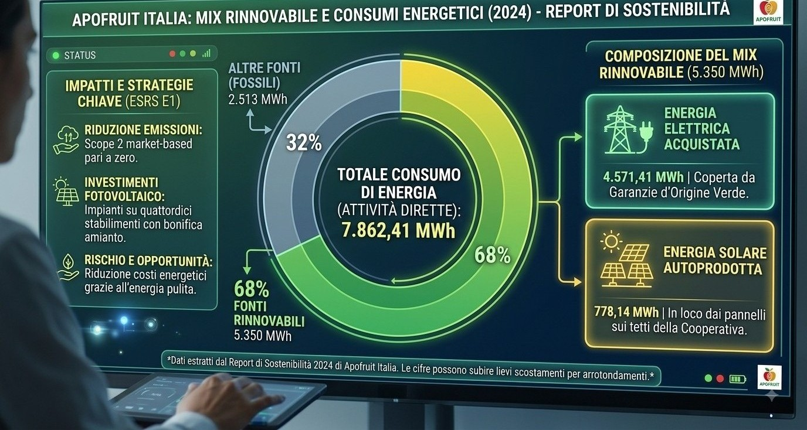

Cambiamento climatico e transizione energetica
Apofruit gestisce i cambiamenti climatici concentrandosi su due aree principali: mitigazione e adattamento. Questo impegno è essenziale per ridurre l'impatto ambientale e garantire la sostenibilità a lungo termine delle operazioni aziendali, assicurando la continuità dei processi produttivi e la gestione efficiente delle risorse naturali.
Nel quadro dello standard Cambiamenti Climatici (ESRS E1) del Report di Sostenibilità 2024 di Apofruit, la mitigazione attraverso fotovoltaici e macchinari ad alta efficienza rappresenta il principale motore per la riduzione dell'impronta carbonica della cooperativa e per cogliere opportunità finanziarie strategiche.
1. Contesto Strategico: Doppia Materialità (SBM-3)
L'analisi di doppia materialità di Apofruit ha mappato gli impatti, i rischi e le opportunità (IRO) chiave relativi al consumo energetico e alle emissioni. In questo contesto, l'efficienza energetica e l'energia solare rispondono a due scopi principali:
- Impatti Positivi (Valore generato): L'uso del fotovoltaico sui tetti e di macchinari ad alta efficienza genera un impatto positivo effettivo, mantenendo bassi i consumi energetici e utilizzando energia pulita in tutte le attività. Ciò contribuisce a compensare gli impatti negativi associati alle emissioni di gas serra (GHG) dirette (Scope 1) e della catena del valore (Scope 3) della cooperativa.
- Opportunità Materiale (Materialità Finanziaria) La principale opportunità legata al clima identificata è la duratura riduzione dei costi operativi ottenuta aumentando la quota di energia solare autoprodotta. Questa opportunità mitiga direttamente un importante rischio strategico: la volatilità dei prezzi globali dei combustibili fossili e dell'elettricità.
Per gestire questa transizione, la cooperativa collabora strettamente con la sua joint venture ApoEnergia S.r.l. (nella quale Apofruit detiene una quota del 47%), specificamente incaricata di installare e gestire gli impianti fotovoltaici di Apofruit e di promuovere l'efficienza energetica.
2. Interventi Fisici: Solare sui Tetti e Bonifica dall'Amianto (E1-3)
L'installazione fisica dell'energia solare è combinata con un'importante iniziativa ambientale e di salute pubblica:
- L'Iniziativa dall'Amianto al Solare: Apofruit ha installato pannelli solari fotovoltaici sui tetti di 14 dei suoi stabilimenti industriali. Questo intervento è stato associato alla bonifica e rimozione totale dell'amianto preesistente su tali coperture. Il progetto ha trasformato vecchi tetti pericolosi in generatori di energia pulita, riqualificando gli asset industriali in strutture ad alta efficienza.
- Certificazione LEAF Marque: Questi progressi infrastrutturali sono convalidati dallo standard internazionale LEAF Marque, che copre il 100% delle attività di Apofruit e attesta le sue pratiche sostenibili in materia di efficienza energetica, uso dell'acqua, gestione del suolo e biodiversità.

3. Indicatori Quantitativi di Energia ed Emissioni (2024) (E1-5, E1-6)
Gli investimenti di Apofruit nel fotovoltaico e nelle tecnologie ad alta efficienza si riflettono direttamente nei dati energetici ed emissivi per l'anno di rendicontazione 2024:
- Il Mix Rinnovabile al 68%: Su un consumo energetico totale di 7.862,41 MWh nelle attività dirette, il % (5.350 MWh) proviene da fonti rinnovabili. Questo mix rinnovabile è composto da:
- 4.571,41 MWh di energia elettrica acquistata coperta da garanzie d'origine verde.
- 778,14 MWh di energia solare autoprodotta direttamente in loco dai pannelli sui tetti della cooperativa.
- Scope 2 a Zero: Poiché il 100% del fabbisogno elettrico di Apofruit è soddisfatto attraverso la combinazione di acquisti verdi e autoproduzione solare, la cooperativa registra 0 t CO₂eq di emissioni Scope 2 (indirette da energia) (calcolate sia con metodo location-based sia market-based).
- Emissioni Scope 1: Le emissioni dirette (principalmente derivanti dal riscaldamento a gas naturale degli stabilimenti e dai carburanti per i veicoli aziendali) sono limitate a 633,62 t CO₂eq.
- Intensità Energetica:Riflettendo le prestazioni dei sistemi di lavorazione e refrigerazione ad alta efficienza, Apofruit registra un'intensità energetica di 31,8 MWh per milione di euro di ricavi netti (su ricavi netti totali pari a 247,265 milioni di euro).
